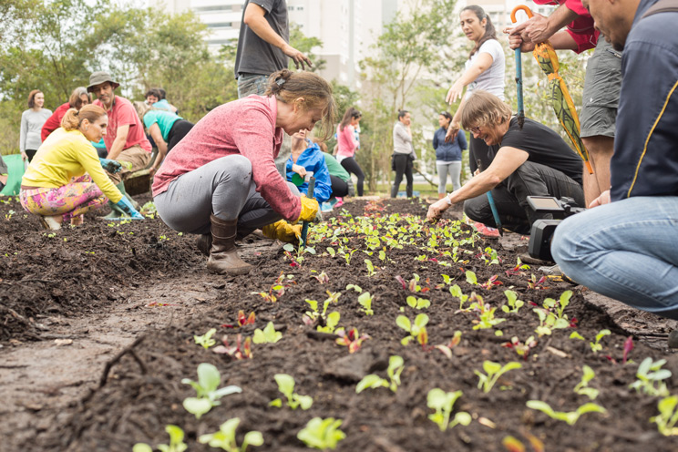

|  | As hortas comunitárias são um fenômeno em crescimento enquanto parte integrante das grandes cidades, uma vez que inspiram
as populações citadinas a desenvolverem boas práticas alimentares, ambientais e cívicas.
As hortas comunitárias são espaços de convívio, de lazer e de aprendizagem que melhoram a qualidade da alimentação das pessoas que se encontram nos centros urbanos. São uma parte ecológica de uma região citadina e, normalmente, estão localizadas em parques ou espaços verdes de lazer. A sua implementação permite a eliminação de terrenos desaproveitados em áreas urbanas e garante a produção de legumes, vegetais e ervas aromáticas ou medicinais para o abastecimento de uma determinada comunidade. Atualmente, as pessoas estão cada vez mais viradas para a natureza e procuram estar em contacto com a terra. Com a plantação de uma horta comunitária, pode conhecer-se todo o ciclo da natureza: como se cultivam os alimentos que aparecem diariamente na mesa e como é que o lixo que é produzido pelo homem pode ser decomposto e servir de fertilizante orgânico. Por outro lado, também é muito importante saber de onde vêm os alimentos. Na maioria dos casos, a produção é feita a partir dos princípios da agricultura orgânica, isto é, sem os inseticidas e fungicidas tradicionais (não contêm químicos perigosos), o que garante mais qualidade ao que é produzido. Assim, as pessoas dão mais valor ao que comem e ao que cultivam e mudam os seus hábitos alimentares, tornando-se assim mais saudáveis e conscientes. |
| Falando de uma forma geral, as hortas comunitárias são instaladas em lotes vagos e a sua produção abastece as famílias ou comunidades que moram perto desses terrenos. Existem vários produtos que podem ser cultivados como: alface, tomate, cebola, rúcula, espinafre, alho, repolho, beterraba, cenoura, entre outras verduras e legumes. | |